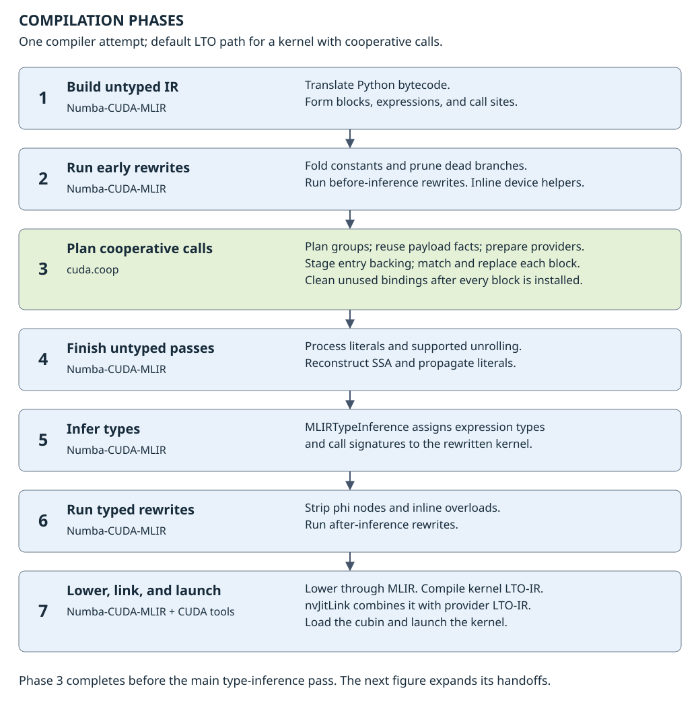
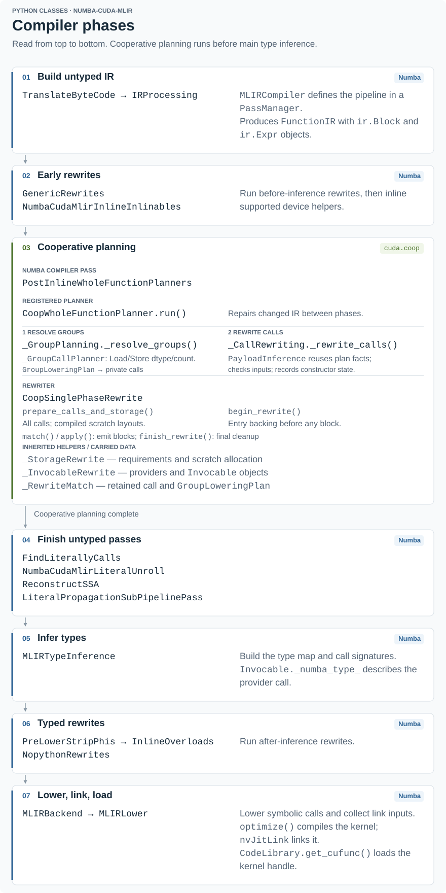
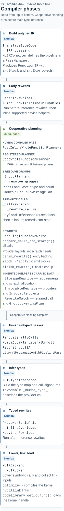
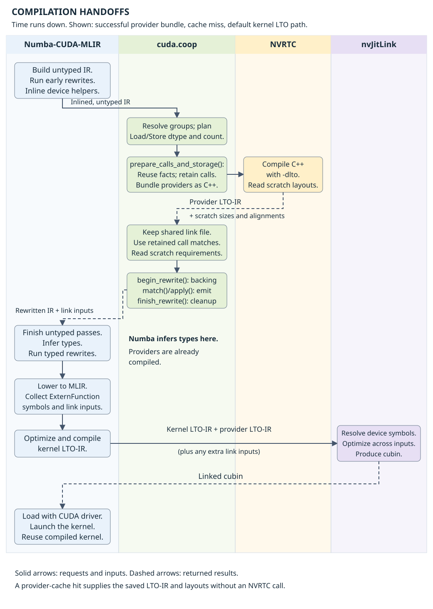
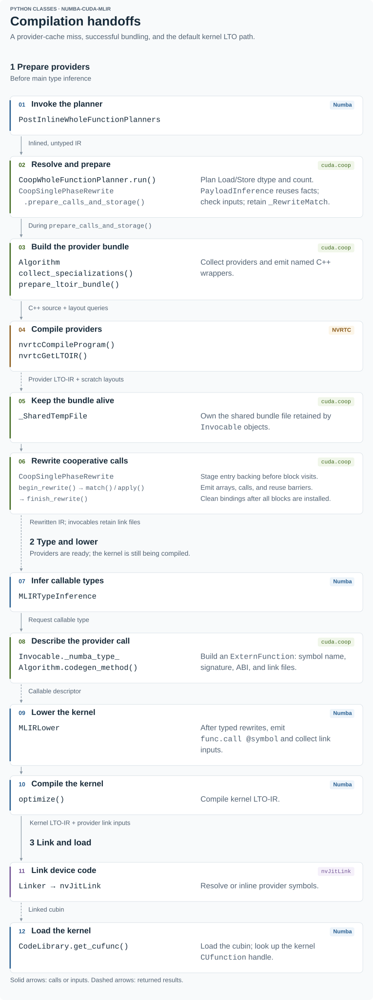
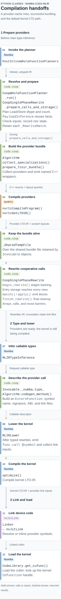

cuda.coop Developer Overview#
cuda.coop makes CUB cooperative primitives callable inside a
Python GPU kernel. The Python compiler compiles the surrounding kernel;
cuda.coop generates the C++ device functions for its primitive calls.
The two are linked together before the kernel runs.
This overview follows a call through the Numba-CUDA-MLIR implementation. It assumes some familiarity with CUDA threads, blocks, and shared memory. The Programming Guide covers writing kernels and the overview covers installation and supported operations; the focus here is how the implementation works and where to change it. For a hands-on tour, follow the Debugger Walkthrough.
This overview describes the Numba-CUDA-MLIR 0.5.x integration.
A tile copy#
Start with a kernel that copies 256 integers. We launch one block of 128 threads, with two items per thread:
import numpy as np
from numba_cuda_mlir import cuda
from cuda import coop
@cuda.jit
def copy_tile(source, destination, items_per_thread):
block = coop.this_block()
items = coop.ThreadData(items_per_thread)
coop.load(block, source, items, algorithm="direct")
coop.store(block, destination, items, algorithm="direct")
items_per_thread = 2
source = np.arange(128 * items_per_thread, dtype=np.int32)
destination = np.zeros_like(source)
copy_tile[1, 128](source, destination, items_per_thread)
cuda.synchronize()
np.testing.assert_array_equal(destination, source)
The example uses NumPy arrays, which Numba-CUDA-MLIR handles at the launch boundary. An application can supply device arrays instead. The primitive sees device pointers in either case.
Each thread owns a separate items payload. With the direct algorithm,
thread 0 gets elements 0 and 1, thread 1 gets elements 2 and 3, and so on.
The Load fills that payload; the Store writes it back. This is a blocked
arrangement of the tile. ThreadData(items_per_thread) describes that
many values per thread, not values shared by the block. Numba-CUDA-MLIR
specializes the kernel for the items_per_thread argument.
The Load and Store visualizations show this ownership pattern and the exchanges used by other algorithms.
All 128 threads execute both calls. There is one kernel launch. Neither
load nor store launches another kernel or returns to the host.
Positional operands and keyword-only options#
Primitive calls take the participating group first, followed by their data
operands. These arguments are positional-only. Options such as
algorithm, valid_items, and offset are keyword-only:
coop.load(block, source, items, algorithm="direct", valid_items=n)
coop.store(block, destination, items, algorithm="direct", valid_items=n)
In the API reference, / marks the end of the positional-only arguments
and * introduces keyword-only parameters. Pass the group and data
operands in their documented order, and use names for optional controls.
This keeps the primitive call compact while making algorithm and partial-tile
choices visible. New optional controls can be added without changing the
operand order.
cuda.compute uses keyword-only arguments for device-wide algorithms,
as described in its API conventions. Those calls
can contain several input/output arrays, item counts, offsets, and a stream.
For cuda.coop, the group already names the participants and the smaller
operand list describes the data handled within the kernel.
Calling CUB from the kernel#
For this fixed example, the C++ work is small. The Load can be expressed as:
#include <cub/block/block_load.cuh>
__device__ void load_tile(const int* source, int (&items)[2])
{
using block_load = cub::BlockLoad<int, 128, 2, cub::BLOCK_LOAD_DIRECT>;
block_load{}.Load(source, items);
}
This function is called by every thread in the block. CUB uses the thread index to decide which elements that thread should load. The block size, item count, dtype, and algorithm are C++ template arguments.
The Python compiler needs a callable device symbol with a known calling convention. It cannot call a C++ template directly, and its array value is not a C++ array reference. We therefore generate a wrapper that exposes the specialization through the compiler’s device calling convention (ABI). For this Load, a simplified wrapper looks like:
extern "C" __device__ int load_tile_abi(
void* result, void* source, void* items)
{
load_tile(
static_cast<const int*>(source),
*reinterpret_cast<int (*)[2]>(items));
return 0;
}
Here the integer return is the ABI status. The leading pointer is the return-value slot and is unused for this void operation. The remaining pointers address the input and this thread’s output payload. For an operation returning a scalar, the wrapper writes that scalar through the return-value pointer. Scalar inputs can be passed by value; arrays and scratch storage use pointers.
These snippets explain the wrapper rather than reproduce its generated
spelling. The real wrapper names encode the specialization and compilation
identity, and the generated source includes the required support types.
Algorithm._source_code() and Algorithm._emit_abi_wrapper() in
numba_mlir/_types.py generate this code.
The backend calls this implementation of the primitive a provider.
NVRTC compiles its generated C++ as relocatable device code using C++17 and
-dlto. The result is LTO-IR, the intermediate representation used for
link-time optimization. An Invocable records the callable signature,
link inputs, and any scratch requirements. Its compiler type uses
Numba-CUDA-MLIR’s ExternFunction to represent the external call.
Numba-CUDA-MLIR compiles the Python kernel and supplies the provider’s LTO-IR to the device link. Link-time optimization can inline the CUB wrapper into the kernel and optimize across that call. Inlining and register use still depend on the resulting code; LTO is not a guarantee about either. Numba-CUDA-MLIR owns the final kernel compilation, loading, and launch.
Compared with the cuda.compute overview, the same runtime compilation tools appear at a different boundary. Here the generated C++ implements a device call within a kernel supplied by the user. That means the group shape and the kernel’s other primitive calls matter to compilation.
Kernels and their generated C++#
The following pairs use source captured while compiling real kernels. Each
captured kernel used one block of 128 threads to copy 256 int32 values,
with two values per thread.
The C++ excerpts retain the emitted types, casts, and calls. Generated
identifiers have been shortened to names such as load_impl and
load_abi, and whitespace has been formatted to fit the page. The copy
excerpts show the no-offset Load helper and its ABI wrapper. Their full
translation units also contain Store and offset overloads.
These excerpts were captured with Numba-CUDA-MLIR 0.5.1, targeting compute capability 12.0. Generated names and emitted overloads can change with the compiler, toolkit, and source checkout.
Capturing the source yourself#
From the CCCL repository root, in an environment with the Numba-CUDA-MLIR dependencies installed:
export PYTHONPATH="$PWD/python/cuda_coop${PYTHONPATH:+:$PYTHONPATH}"
export CUDA_COOP_ENABLE_CACHE=0
export CUDA_COOP_SOURCE_DUMP_DIR="$PWD/coop-source-dumps/direct"
python python/cuda_coop/examples/numba_mlir/source_dumps.py direct
export CUDA_COOP_SOURCE_DUMP_DIR="$PWD/coop-source-dumps/transpose"
python python/cuda_coop/examples/numba_mlir/source_dumps.py transpose
Each command launches the selected kernel, checks its result against NumPy,
and writes cuda_coop_numba_mlir_<hash>.cu under the selected directory.
Use CUDA_VISIBLE_DEVICES as well if you need to select a particular GPU.
The script’s copy examples use 64 threads and four items per thread. The recorded copy captures use 128 threads and two items per thread. Both arrangements copy 256 values, but their template arguments differ.
The example script includes the imports, launches, and result checks omitted from the panels below.
Set the environment variables before starting Python. Unset or empty
CUDA_COOP_SOURCE_DUMP_DIR disables dumping. The provider source is dumped
on provider-cache hits too. These commands disable that cache and use a
fresh process for each kernel so the captures are easy to associate with
their inputs. Reusing an already compiled kernel in the same process can
bypass provider generation entirely.
The dump contains the C++ input to NVRTC. Numba compiles the surrounding kernel separately, so its indexing, launches, and planner-inserted barriers need to be inspected in the kernel’s compiler output. Bundling can also put several providers and overloads in one source file. A definition in the dump does not by itself establish which overload the final kernel calls.
Direct Load and Store#
Python kernel
@cuda.jit
def copy_direct(source, destination, items_per_thread):
block = coop.this_block()
items = coop.ThreadData(items_per_thread)
coop.load(
block,
source,
items,
algorithm="direct",
)
coop.store(
block,
destination,
items,
algorithm="direct",
)
Generated C++: Load excerpt
#include <cuda/std/cstdint>
#include <cub/block/block_load.cuh>
using block_load_t =
cub::BlockLoad<::cuda::std::int32_t, 128, 2,
::cub::BLOCK_LOAD_DIRECT, 1, 1>;
extern "C" __device__ void
load_impl(::cuda::std::int32_t *src,
::cuda::std::int32_t *dst) {
block_load_t().Load(
src,
*reinterpret_cast<::cuda::std::int32_t (*)[2]>(
dst));
}
extern "C" __device__ int
load_abi(void *__ret, void *src, void *dst) {
::cuda::std::int32_t *cast_src =
reinterpret_cast<::cuda::std::int32_t *>(src);
::cuda::std::int32_t *cast_dst =
reinterpret_cast<::cuda::std::int32_t *>(dst);
load_impl(cast_src, cast_dst);
return 0;
}
128 and 2 appear in the CUB template arguments. The ABI accepts
pointers, casts the payload pointer back to an array of two elements, and
calls Load. Direct Load needs no scratch pointer. Its __ret slot is
unused because Load fills the caller’s payload; the integer return value is
the ABI status. The Store wrapper uses the same pointer conversion and calls
Store.
Recovering the specialization#
The fixed C++ example supplied all its template arguments by hand. In the Python kernel, some of that information is in the call, some comes from type inference, and some comes from the configured launch:
Information |
Source in the example |
Use |
|---|---|---|
Group |
|
Resolve a block with dimensions |
Payload element type |
Load’s typed source array |
Infer the C++ element type and check the destination type. |
Items per thread |
|
Instantiate a fixed array extent of two. |
Algorithm |
|
Select the CUB algorithm and its storage requirements. |
Input and output addresses |
Kernel arguments |
Pass device pointers when the kernel executes. |
Target architecture |
Compiler target |
Compile compatible device code for the surrounding kernel. |
this_block() is a compile-time group descriptor. The planner resolves
it against the launch and removes the descriptor from the runtime code.
The user does not need to repeat the block size in the primitive call.
Launching the same kernel with a different block shape can require a
different specialization.
The full shape matters. A block of (32, 4, 1) and a block of
(128, 1, 1) both contain 128 threads, but their coordinate expressions
differ. Group indexing uses the x-major linear rank:
threadIdx.x + blockDim.x * (threadIdx.y + blockDim.y * threadIdx.z)
Groups can also describe partitions. this_warp().group_by(8) describes
four consecutive groups of eight threads within a physical warp. The
partition width is a compile-time value. Each group’s rank, memory tile,
scratch instance, and synchronization mask must agree on that partition.
For Warp Load/Store, the enclosing block must contain complete physical
warps, and every member of a participating logical group must reach the
call.
There is also a distinction between a static group size and a runtime quantity measured within that group. A tail Load may use:
# Inside a kernel, after clamping remaining to this block's tile size:
coop.load(block, source, items, valid_items=remaining, oob_default=0)
The CUB specialization still describes the full tile. remaining says
how many elements in that tile are valid on this invocation. It can be a
runtime value, provided it is uniform across the group and lies between
zero and the tile capacity.
The core represents optional arguments with ArgumentBinding:
OMITTEDselects the overload without that argument.STATICcarries a compile-time value into specialization and code generation.RUNTIMEkeeps an operand in the device call.
Those cases affect the ABI and cache identity. Treating a runtime value as
a constant would compile the wrong program; treating an omitted argument
as zero could select a different CUB overload. The planner rejects invalid
static controls before compilation. For bounded runtime controls such as
valid_items, the generated code checks the range before narrowing to
CUB’s integer parameter. A failed check traps on the device. Callers must
also provide enough memory for the selected tile and offset.
From Python syntax to an external call#
The integration registers one whole-function planner,
CoopWholeFunctionPlanner in _compiler/_planner.py. It inspects and
modifies the compiler’s intermediate representation (IR) after device
helper inlining. Its run() method sequences two phases implemented by
separate mixins:
_GroupPlanning._resolve_groups()finds group constructors, group methods, and group-first primitive calls. It requests exact launch metadata, resolves descriptors and payload information, and asks the primitive family’s core planner for a lowering plan. The family’s Numba implementation turns that plan into private provider calls carrying the plan as compile-time metadata._CallRewriting._rewrite_calls()materializes those calls usingCoopSinglePhaseRewrite. Load/Store analysis reuses the plan’s dtype and item count, checks agreement with factory inputs, and records the payload facts needed for allocation. The rewrite replacesThreadDatawith fixed local arrays, builds invocables, supplies scratch pointers where needed, and emits result handling and reuse barriers. It removes the compile-time constructors from the runtime IR.
When group resolution changes the IR, CoopWholeFunctionPlanner.run()
calls Numba’s _planner_registry._repair_ir() before rewriting calls.
This rebuilds the definition lookup and control-flow analysis so the second
phase sees the newly introduced providers and their operands. Rewriting
also runs when group resolution makes no changes, since payload constructors
and private provider calls may remain. The mixins and rewrite helper have
no separate registration. The planner returns True if either phase
changed the IR; Numba then repairs the final IR before proceeding to later
planners and compiler passes. That result does not request another run of
the cooperative planner.
Inlining is relevant to helper functions. A helper that receives a group and
calls coop.load can be planned after it is inlined into its kernel
caller. The descriptor then has the caller’s launch context. A group
descriptor escaping into an arbitrary runtime object or a non-inlined device
call is not supported by this mechanism. Descriptor validation waits for
default helper inlining and recursively follows aliases and conditional
definitions. A surviving unsupported helper or descriptor escape is
diagnosed with its name. Standalone callbacks cannot contain primitives
because they lack the caller’s cooperative launch context.
Here, group descriptors are compile-time ThreadGroup and
ThreadHierarchy values: they describe which threads cooperate.
_GroupCallPlanner._validate_group_descriptor_references() checks their
remaining references after collecting replacements and before changing
block bodies. A descriptor may feed another group or hierarchy assignment
or a primitive call being replaced. Returning it or passing it to an
unrelated runtime call raises EscapingGroupDescriptorError. ThreadData
constructs a per-thread payload array and follows the separate payload
analysis and materialization path.
literal_unroll values shaping cooperative groups, selectors, payloads,
or storage are unsupported. The planner diagnoses those uses and suggests
explicit calls with compile-time constants. Ordinary unrolling unrelated to
cooperative planning remains available. Supporting shaped unrolling would
require revisiting planner ordering; this implementation does not move
planning after SSA or unrolling.
The common API primitives in _core/api/ are compiler markers with shared
signatures and validation rules. Numba’s planner recognizes their identity
and binds the call arguments. Reading the Python body alone does not show
the path that runs during kernel compilation.
Compiler phases and handoffs#
The figures show a new kernel compilation in Numba-CUDA-MLIR 0.5.x. Read each figure from top to bottom. These compiler stages run on the host. The GPU executes the kernel after compilation and linking finish.
The first figure locates cooperative planning within the compiler pipeline.
It groups small compiler passes by purpose. The green block is the single
registered cuda.coop planner. Select Python classes to see the classes
and methods that implement the same phases.


Payload fact reuse stays within cooperative planning, before the main type-inference pass.#


The classes follow the same seven phases.#


The classes follow the same seven phases.#
Mixin methods run on their owning planner or rewriter. They are not
separate compiler passes. GroupLoweringPlan carries call semantics
into provider analysis; _RewriteMatch retains the analyzed call for
storage planning and replacement.
Numba first builds untyped IR: statements and expressions without a full map of their types. Argument types and some constants are already known. Early rewrites fold constants and remove dead branches. Device-helper inlining then makes supported helper calls visible in the caller’s IR.
PostInlineWholeFunctionPlanners calls CoopWholeFunctionPlanner
at this point. The planner resolves groups, prepares providers, and rewrites
cooperative calls. It uses argument types, constants, and value definitions
to infer the payload facts that provider selection needs. Planned Load/Store
calls reuse those facts during provider analysis. This work runs before
Numba’s main type-inference pass.
After planning, Numba processes literals, reconstructs static single
assignment (SSA) form, and propagates literal values. MLIRTypeInference
then builds the type map and call signatures. Typed passes remove phi nodes,
inline overloads, and run the after-inference rewrites. MLIR lowering and
optimization follow.
GenericRewrites runs the compiler’s before-inference rewrite
registry. NopythonRewrites runs its after-inference registry.
CoopSinglePhaseRewrite is a helper inside the whole-function planner;
it has no separate registration in either registry. Its name does not imply
a second cooperative pass after typing.
The next figure expands the handoffs between the compiler and the CUDA tools. It shows successful bundling on a provider-cache miss. NVRTC compiles the generated C++ providers. Numba-CUDA-MLIR compiles the surrounding Python kernel and supplies both sets of link inputs to nvJitLink.


Provider LTO-IR returns before type inference. The final link happens after Numba compiles the kernel.#


The rewrite binds an Invocable. Linking resolves or inlines
the provider symbol.#


The rewrite binds an Invocable. Linking resolves or inlines
the provider symbol.#
Solid arrows show inputs or calls. Dashed arrows show returned results.
This path uses Algorithm providers. Direct C-ABI providers and extra
support images use other paths.
The figure shows the default LTO path. Debug settings or extra PTX inputs can change how Numba compiles the kernel’s link input. The provider bundle still contains LTO-IR. See Activation and compilation reuse for cache controls and artifact lifetime.
Carry payload facts into provider analysis#
For the tile copy, group planning has already established that items
holds two int32 values per thread. The GroupLoadStoreSemantics in
plan.call.operation records that dtype and item count. The private
provider call carries its GroupLoweringPlan in reserved compile-time
metadata, which is removed before the provider factory is called.
_validate_and_split_args() passes this plan to PayloadInference.
The Load/Store hook normalizes the plan’s dtype to a Numba type and merges
both facts through infer_kwarg(). Existing factory arguments must agree;
the payload constructor’s known extent must agree too. The hook records
the dtype through constructor and alias state so apply() can allocate
the local array. It does not repeat the memory/payload dtype walks or the
Store payload-write scan that established the plan.
Common-API numeric validation and runtime-control checks still run. Scalar Store boxing and scratch allocation remain part of emission. Direct private provider calls without a supported Load/Store plan use full operand inference. Other operation families retain their own inference hooks. The group and rewrite resolvers handle different IR forms, including loops and emitted payload markers, so sharing plan facts does not replace them with one resolver.
These facts belong to the current function IR and compilation attempt. Provider analysis resolves the original operands and constructors; the completed matches retain assignment identity across block visits. A launch retry prepares a fresh rewriter. Provider artifact caches have a separate lifetime from these call facts.
Collect the providers before rewriting calls#
prepare_calls_and_storage() examines the whole function before any block is
rewritten. A consumer in a later block can determine an earlier payload’s
dtype or add a requirement to a shared scratch descriptor. Keeping the
original calls and definitions available lets the compiler collect these
facts across blocks and inlined helpers. Provider preparation then supplies
the C++ size and alignment of each scratch type.
prepare_calls_and_storage()calls_collect_function_calls()to scan constructors first, then analyze each provider call once with_analyze_provider_call(). Each_RewriteMatchrecords the resolved factory arguments, runtime operands, and lowering metadata. Planned Load/Store calls consume the payload facts described above during this analysis._collect_temp_storage_uses()consumes those matches and validates storage ownership and descriptor uses before provider compilation._prepare_ltoir_bundle_for_matches()removes duplicate specializations. It calls their factories insidecollect_specializations(). In this context, a factory records anAlgorithminstead of building anInvocableimmediately.prepare_ltoir_bundle()combines compatible algorithms into one C++ source unit. It shares the includes and emits each distinct provider body and its ABI wrappers.Bundle preparation calls
compile_with_layouts()to get the provider LTO-IR and scratch layouts. On a cache miss, one NVRTC compilation supplies both. On a cache hit, the cache supplies the saved image and its matching layouts.The algorithms retain a shared LTO-IR file. Their invocables use that file as a link input.
_compute_func_temp_storage_requirements()uses the validated storage uses and provider layouts to collect sizes and alignments beforeapply()emits arrays and scratch pointers.
After preparation, _func_matches retains the completed call records by
original assignment identity. Block matching reuses them; an assignment
replaced by apply() no longer matches on a later visit.
For the tile-copy example, the Load and Store providers can share one NVRTC compilation. Each call keeps its own signature and runtime operands. Bundling requires compatible specializations and at least two distinct providers. A single provider uses its individual compilation path. If the optional bundle cannot be prepared, the rewrite can materialize providers individually. Extra support images and kernel compilation remain separate. Thus, one provider bundle does not guarantee one NVRTC call for every kernel compilation.
Rewrite calls before the device address is known#
The rewrite needs the provider’s symbol name and calling convention.
It does not need the provider’s final device address. Algorithm uses
the same qualified name for the generated wrapper and its call descriptor.
prepare_calls_and_storage()prepares the provider bundle and creates invocables for calls that need scratch storage. Their LTO-IR and scratch layouts are already available.apply()reuses these invocables or creates others.apply()binds anInvocablewithir.Globaland emits anir.Expr.call. The global contains a Python object for the compiler, not a device function pointer. The object retains the provider link files.During typing,
Invocable._numba_type_builds local overload templates.Algorithm.codegen_method()creates anExternFunctionwith the symbol name, signature, ABI, and link files. The compiler uses this description; it does not executeInvocable.__call__.MLIRLowerdeclares the external symbol, emits a symbolicfunc.call, and collects the link files. Kernel compilation produces the other LTO-IR input. nvJitLink resolves the symbol across these inputs and can inline the provider into the kernel.CodeLibrary.get_cufunc()loads the linked cubin and obtains the kernel’sCUfunctionhandle. This path does not request a separate provider handle.
Follow the function rewrite lifecycle#
_CallRewriting._rewrite_calls() owns preparation, storage staging, block
replacement, and final cleanup. It calls prepare_calls_and_storage() and
begin_rewrite() before visiting blocks. For each block with matches, it
installs the result of apply(). Only after all replacements are installed
does it call finish_rewrite(). These are steps within the existing
whole-function planner, which still runs before type inference.
Phase |
Entry points |
Purpose |
|---|---|---|
Prepare the function |
|
Analyze each provider call, reusing planned Load/Store payload facts. Validate storage uses, prepare the provider bundle, then collect scratch requirements before changing statements. |
Stage shared storage |
|
Check shared-memory conflicts and insert the backing allocation in the entry block, so every scratch view can use it. |
Match one block |
|
Select prepared call records by assignment identity. Record this block’s constructors and payload extents. |
Prepare replacements |
|
Reuse or materialize each call’s provider and bind its specialization before emitting the block’s statements. |
Emit replacements |
|
Replace statements in source order with payload arrays, scratch views, provider calls, result handling, and storage-reuse barriers. Refresh the typing context and return the replacement block. |
Clean unused bindings |
|
Remove unused compile-time arguments and constructor references. Check uses across the completed function so another block’s unreplaced call cannot lose a binding it still needs. |
ThreadData holds each thread’s payload. Its dtype and extent determine
the local array emitted by apply(). A standalone payload can obtain its
dtype from typed indexed writes even when no primitive consumes it; this
last inference step still runs during array emission. TempStorage is an
opaque scratch descriptor whose ownership and reuse policy are checked
against all consumers. Its concrete size, alignment, and slices depend on
the compiled providers, so backing allocation follows provider preparation.
Putting shared backing in the entry block makes it dominate every scratch
view: execution reaches the allocation before any use, regardless of the
order in which the compiler visits blocks. apply() builds only its
replacement block and records cleanup candidates. Original definitions stay
available during emission; finish_rewrite() retires eligible bindings
after checking final uses. The planner registry then repairs IR analysis.
Preparation can compile providers and update caches without changing block
statements. An incomplete launch-dependent preparation leaves the IR intact
for a fresh rewriter. Individual provider materialization can still occur in
apply(), before that block’s payload allocations and calls are emitted.
To trace these stages, start with the planner and
the block rewrite.
prepare_calls_and_storage() coordinates storage validation and layout with
bundle preparation.
Provider types and source generation connect those helpers to
the NVRTC interface.
The Debugger Walkthrough provides breakpoints for the same
flow. The remaining passes belong to the installed compiler’s
mlir_compiler.py, mlir_lowering.py, and mlir_optimization.py.
Payloads, layouts, and results#
ThreadData becomes a fixed local array in Numba-CUDA-MLIR. Its extent
must be known at compile time. The compiler may keep its elements in
registers; indexing, address-taking, and register pressure determine the
final placement.
Both common and qualified ThreadData constructors accept an optional
alignment keyword. It specifies a minimum power-of-two alignment in
bytes when the compiler materializes payload storage. It does not assert
alignment of the source or destination arrays passed to Load and Store.
The dtype can also come from the surrounding operation. In this kernel
fragment, items_per_thread is a kernel argument and the Load’s source
establishes the dtype:
items = coop.ThreadData(items_per_thread)
coop.load(block, source, items)
coop.store(block, destination, items)
The planner propagates the dtype from source to items. A later Store
can then use items even though its constructor did not specify a dtype.
Load fills items in place and returns None.
Layout describes which logical tile elements each thread owns. A striped
Load gives thread t elements t + i * block_size. A blocked
Load gives it items_per_thread * t + i for each local index i.
The transpose algorithm uses striped memory transactions internally
and fills the payload in blocked order;
striped exposes the striped payload to the caller. The caller must
choose Load and Store algorithms that agree on that arrangement.
Load and Store return None. Load fills the supplied output in place.
Store follows CUB: transpose algorithms may rearrange the input payload
in place. Invalid Load slots are unspecified unless a default is supplied.
The qualified namespace accepts additional compiler-specific values, such as local-array payloads where supported. Type support is still checked by each primitive. An ABI helper for aggregate values does not imply that public payload operations accept arbitrary structures. The current common payload APIs require their supported numeric dtypes.
Inferring scalar types across loops#
The group planner needs a scalar’s dtype before ordinary Numba type inference runs. Following assignments works directly for an array element or an explicit scalar cast. A loop can introduce a cycle: the next iteration’s input depends on a result computed from that same input. Stopping at the cycle would lose the known dtype of the value that entered the loop.
For example, this fragment carries a value from a float32 source array
through arithmetic that preserves its type:
value = source[cuda.threadIdx.x]
for _ in range(repetitions):
value = value + np.float32(1)
coop.store(coop.this_block(), destination, value)
GroupPlanningContext.dtype first tries its ordinary recursive analysis.
If that cannot resolve the value, _loop_dtype propagates candidate types
from known definitions until they stop changing. A loop backedge means an
assignment that supplies the next iteration’s value; it may temporarily use
the candidate for that variable. The planner then repeats the analysis with
strict checks on every reaching definition before accepting the candidate.
That final check is essential. A known initial value does not establish the type of a later opaque helper result. Such a path remains unresolved, and conflicting known types are rejected. Candidate facts are discarded after each query, including failed queries, so they cannot supply a type to a later unrelated operation. This analysis supports type-preserving loops; general type promotion remains the compiler’s responsibility. The separate ThreadData inference guidance still applies to payload construction and unsupported helper producers.
Activation and compilation reuse#
Importing cuda.coop after numba_cuda_mlir activates the Numba backend
hooks. An isolated common API import does not load optional compilers.
Register explicitly to make initialization independent of import order:
from cuda import coop
coop.register("numba-cuda-mlir")
This host-side call imports the selected backend and activates its hooks.
It is safe to repeat. Importing cuda.coop.numba_mlir as numba_coop also
activates the hooks and exposes the backend namespace. Every install includes
the same DSL integration modules. An extra only adds dependency requirements
from pyproject.toml; it does not change the wheel or register hooks in a
running process.
_compiler/_activation.py checks the runtime and compiler compatibility,
imports the planner, and registers CoopWholeFunctionPlanner as its final
step. There is one compiler hook to register, so activation needs no
registry snapshots or rollback. _compiler/_numba_mlir_compat.py checks
the installed compiler version when the Numba backend is activated, before
importing its compiler integration. The Numba extras declare
numba-cuda-mlir>=0.5.0,<0.6 for package installers; the activation check
also covers applications that install bare cuda-coop and manage compiler
dependencies separately. An unused Numba installation has no effect on other
backends. Once the version check succeeds, integration modules import the
required compiler APIs directly. Missing launch metadata and other
compilation errors retain their specific diagnostics. A new compiler series
needs its integration checked before the supported range changes. The
compatibility module documents the reasons for this division in detail.
The rewrite can collect compatible CUB specializations and compile them in a single NVRTC source bundle. This reduces repeated header parsing and compilation. Each call still has its own signature, result handling, and storage contract.
There are caches at several stages. Compiled Python operators are reused
within the process. Provider compilation can use a persistent cache when
CUDA_COOP_ENABLE_CACHE is enabled before backend import. Numba-CUDA-MLIR
separately owns the compiled kernel’s reuse and lifetime. The provider cache
uses XDG_CACHE_HOME/cccl on POSIX, falling back to ~/.cache/cccl;
on Windows it uses LOCALAPPDATA\cccl, falling back to
~\AppData\Local\cccl. Unset, empty, or relative base directories use
the fallback. These settings are read at backend cache import.
A provider cache key must identify the code being compiled: the operation, dtype, shape, static arguments, wrapper ABI, target architecture, compiler options, and selected headers and compiler libraries. Runtime array addresses and runtime tail counts are operands, not specialization values. The header and toolkit identity matters because the same CUB template arguments can produce different code or scratch layouts with different headers.
The cuda-coop wheel bundles matching CCCL headers. A source checkout
uses its checkout’s headers, and CUDA_COOP_CCCL_ROOT can select an
explicit root. See Configuration for header selection, provider-cache
settings, and generated-source dumps. NVRTC, its builtins, nvJitLink, and CUDA
headers must also resolve coherently. _headers/ and
_compiler/_nvrtc.py handle that selection. An invocable retains its
temporary LTO-IR files for linking;
those files are compilation inputs, not loaded kernel handles.
Debugger Walkthrough#
Follow the tile copy through a Python debugger to see how the compiler recognizes a primitive, chooses its CUB specialization, and connects the generated device code to the kernel. These breakpoints stop in the host Python code doing the compilation. GPU threads execute the compiled kernel; the Python debugger cannot stop inside that device execution.
An example to debug#
Open docs/python/coop/debugger_walkthrough.py in your checkout, or
download the example. It needs no
command-line arguments:
# Import the kernel DSL before cuda.coop so automatic registration sees it.
# isort: off
import numpy as np
from numba_cuda_mlir import cuda
from cuda import coop # First breakpoint: observe backend registration.
# isort: on
@cuda.jit
def copy_tile(source, destination, items_per_thread):
block = coop.this_block()
items = coop.ThreadData(items_per_thread)
coop.load(block, source, items, algorithm="direct")
coop.store(block, destination, items, algorithm="direct")
def main(items_per_thread=2):
source = np.arange(128 * items_per_thread, dtype=np.int32)
destination = np.zeros_like(source)
copy_tile[1, 128](
source, destination, items_per_thread
) # Compile, link, and launch.
cuda.synchronize()
np.testing.assert_array_equal(destination, source)
print("First launch: copy verified")
destination.fill(-1)
copy_tile[1, 128](
source, destination, items_per_thread
) # Reuse the compiled kernel.
cuda.synchronize()
np.testing.assert_array_equal(destination, source)
print("Second launch: copy verified")
if __name__ == "__main__":
main()
By default, all 128 threads copy two integers each. main accepts an
items_per_thread argument and forwards it to both kernel launches.
The second launch uses the same argument types, item count, and block
shape so you can observe compilation reuse.
Both launches check the result. Warnings about a small grid and host-array
copies are expected for this small example.
Configure VS Code#
Use a checkout containing the Numba-CUDA-MLIR stack described above. Open that CCCL checkout as the VS Code folder, and use Python: Select Interpreter to choose an environment with the Numba-CUDA-MLIR dependencies installed as described in the installation instructions. The Python and Python Debugger extensions must be installed in the environment where VS Code runs the program, including the remote side when using Remote SSH.
Add this configuration to .vscode/launch.json in the checkout. If that
file already exists, add the configuration to its configurations list:
{
"version": "0.2.0",
"configurations": [
{
"name": "cuda.coop: Debug active Python file",
"type": "debugpy",
"request": "launch",
"program": "${file}",
"console": "integratedTerminal",
"cwd": "${workspaceFolder}",
"justMyCode": false,
"env": {
"PYTHONPATH": "${workspaceFolder}/python/cuda_coop",
"CUDA_COOP_CCCL_ROOT": "${workspaceFolder}",
"CUDA_COOP_DISABLE_AUTO_DSL_REGISTRATION": "0",
"CUDA_COOP_ENABLE_CACHE": "0",
"CUDA_COOP_SOURCE_DUMP_DIR": "${workspaceFolder}/build/coop-debug-sources"
}
}
]
}
justMyCode: false lets you step into the compiler and library modules.
PYTHONPATH and CUDA_COOP_CCCL_ROOT select this checkout’s Python
sources and C++ headers. Automatic registration is enabled, and the
provider disk cache is disabled so a fresh debug session reaches NVRTC.
On a machine with several GPUs, add CUDA_VISIBLE_DEVICES to env
to select the device you want to use.
With the example file active, set your first breakpoint on
from cuda import coop, using the gutter or F9. Select
cuda.coop: Debug active Python file in Run and Debug, then press
F5. Keep the example active when starting: ${file} means the
currently selected editor file.
VS Code also has a Python Debugger: Debug Python File editor action. Use the named launch configuration for this walkthrough so the source paths and library-stepping setting above apply. See the VS Code Python debugging documentation for those controls.
At a breakpoint, F10 steps over a statement, F11 steps into a call,
Shift+F11 steps out, and F5 continues to the next breakpoint.
Expressions in Debug Console use the selected Call Stack frame.
The instructions below name functions and statements so you can find the
breakpoints even as line numbers change. Put breakpoints on the executable
statement, rather than the def line or its decorator.
Initial import and registration#
The first stop is just before cuda.coop imports. Numba-CUDA-MLIR has
already loaded because of the preceding import. Under
python/cuda_coop/cuda/coop/, open __init__.py and put a breakpoint
on _auto_register_known_dsls(). Continue to it and step into the call.
In _core/_auto_registration.py, follow the loop to
candidate.activate(). Inspect candidate.runtime_module and its
membership in sys.modules: the runtime name is numba_cuda_mlir.
This is why the import order matters. The automatic path recognizes a
runtime the application has already imported.
Before continuing, set a breakpoint on _require_runtime() inside
_initialize_runtime_hooks() in
numba_mlir/_compiler/_activation.py. At this stop, the call stack
connects the root import to the qualified backend import and then to hook
registration. Step over the compatibility check and the import of
_planner. Inspect planner_module.CoopWholeFunctionPlanner before
stepping over register_planner(...). This final call registers
the single compiler hook that resolves and rewrites cooperative calls.
Disable these import breakpoints. Set a breakpoint on the first
copy_tile[1, 128](source, destination, items_per_thread) in the example
and continue. At this point, check coop.__file__ in Debug Console. It
should point inside the checkout you opened. The @cuda.jit decorator has
made a dispatcher; this first launch will trigger compilation for its
arguments.
Fast-forward to the Numba hooks#
Paths from here through the provider steps are relative to
python/cuda_coop/cuda/coop/numba_mlir/.
In _compiler/_planner.py, find CoopWholeFunctionPlanner.run() and
set a breakpoint on groups_changed = self._resolve_groups(). Continue
from the example’s launch line. You have crossed from application code
into a hook Numba calls while compiling it. Inspect the Call Stack to see
that caller.
In _compiler/_group_planner.py, find
_GroupPlanning._resolve_groups() and set a breakpoint on
launch_config = require_launch_config(planner.state). Continue from the
planner’s entry point to inspect the first phase.
Step over the assignment, then evaluate:
self.state.func_ir.func_id.func_qualname
launch_config
self.state.func_ir.dump()
The function name is copy_tile. The launch configuration contains
block: (128, 1, 1) and grid: (1, 1, 1). The IR dump shows Numba’s
intermediate representation of the Python function, including the
this_block, ThreadData, load, and store calls. The dump
prints to the debuggee’s output; its return value is None.
The block dimensions came from [1, 128] at the host launch site. They
give this_block() a concrete group shape for C++ specialization. You
are inspecting compiler values and descriptors here; items has not
become a particular GPU thread’s two integers.
The planner can also run for generated helper functions. The launch-config breakpoint comes after the no-group-markers guard, which avoids many uninteresting stops. This configured launch obtains its launch facts directly; it does not require a failed first compilation to discover them.
From a primitive call to a plan#
Set the next breakpoint in _compiler/_group_load_store.py, inside
_LoadStorePlanning._lower_load_store(), on
planned_operation = self._plan_provider_operation(plan). Continue.
The preceding call has produced a GroupLoweringPlan for Load.
Inspect these expressions:
operation
plan.call.operation
plan.target
dict(plan.implementation.template_arguments)
plan.participation
plan.temp_storage
plan.synchronization
Expect operation == "load", target CUB_BLOCK, T equal to
int32, BLOCK_DIM_X equal to 128, and ITEMS_PER_THREAD equal to
2. ALGORITHM selects ::cub::BLOCK_LOAD_DIRECT. The participation
requirements specify the complete block. Direct Load needs no shared scratch,
and its storage-reuse barrier is NONE.
In the same function, advance to statements.extend(...) near the end.
Compare factory_kwargs with runtime_args. The block shape, dtype,
item count, and algorithm are compile-time choices in factory_kwargs.
runtime_args holds IR variables for source and items. Those
become operands of the generated device call.
Continue to the same stops for Store. Its template selects
BLOCK_STORE_DIRECT, and its runtime operands are destination and
items. Disable the Load/Store breakpoints after inspecting both calls.
The public calls now have private provider calls carrying those choices.
Generate and compile the C++ providers#
Set a breakpoint on rewrite = CoopSinglePhaseRewrite(...) in
_CallRewriting._rewrite_calls() in _compiler/_rewrite.py. Continue
and use self.state.func_ir.dump() again. Compare it with the earlier
dump: group resolution has introduced private factories and constants
for the resolved operations.
Before continuing, set a breakpoint in _compiler/_rewrite_load_store.py,
inside _infer_load_store_payload(), on
semantics = plan.call.operation.
Continue and inspect inference.lowering_plan, semantics after that
assignment, and payload_specification. For the Load call, the plan’s
operation records int32 and two items per thread.
Step through the infer_kwarg() calls to see the plan and factory inputs
checked for agreement, followed by constructor dtype recording. This branch
returns before the operand dtype walks used by unplanned provider calls.
Disable this breakpoint after inspecting Load.
Before continuing from the Load hook, set a breakpoint in
_analyze_provider_call() on return _RewriteMatch(...). Inspect
factory_kwargs, runtime_args, and lowering_plan for Load and
Store. This analysis runs once per call
during function preparation; later block matching reuses the records.
Before continuing, set a breakpoint in _types.py, inside
prepare_ltoir_bundle(), on the call to
nvrtc.compile_with_layouts(...).
At that stop, inspect src and:
[algo.struct_name for algo in algorithms]
This example produces both the BlockLoad and BlockStore specializations
in one C++ source unit. Find BLOCK_LOAD_DIRECT, BLOCK_STORE_DIRECT,
and the extern "C" ABI wrappers in src. Their template arguments
should agree with the plan you just inspected. To trace an individual
provider’s source generation on another run, stop in
Algorithm._source_code() in the same file.
The Call Stack at the bundle stop also explains its timing:
_CallRewriting._rewrite_calls() calls prepare_calls_and_storage(), which
analyzes calls and validates storage uses before preparing the bundle.
After compilation supplies the layouts, it collects scratch requirements
and saves the matches for block emission. This still occurs before
apply() replaces the calls and before Numba’s main type-inference pass.
Set a breakpoint in _compiler/_nvrtc.py, inside compile_impl(),
on err, prog = nvrtc.nvrtcCreateProgram(...). Continue and inspect
cpp, cc, rdc, code, and compiler_options. cpp is the
source you just saw; cc identifies your device’s target architecture.
rdc is true and code is "lto". The options include C++17,
the selected include directories, and -dlto.
Step over nvrtcCompileProgram and the subsequent error check. NVRTC
has compiled the C++ provider code. The nvrtcGetLTOIR calls retrieve
the bytes for linking it into the Python kernel. The launch configuration
also saves the generated .cu source in build/coop-debug-sources.
Open that file for a more convenient view of the complete source.
Materialize the payload and device calls#
Set a breakpoint on if self._has_temp_storage_requirements(): in
begin_rewrite() in _compiler/_rewrite.py. Continue to it and inspect
self._func_matches and self._thread_data_specifications. Function
preparation is complete; the original call assignments are still in the IR.
The direct Load/Store algorithms need no shared backing, so this stop
proceeds to block matching without allocating scratch. The optional
transpose example below takes the backing-allocation branch here.
Set a breakpoint in the _prepare_call_invocables() method of
CoopSinglePhaseRewrite in
_compiler/_rewrite.py on
invocable, _ = self._materialize_invocable(match). Continue to it, then
step over the statement to obtain the callable provider for this match.
Inspect:
match.op_name
match.factory_kwargs
match.runtime_args
invocable.files
invocable.storage_abi
invocable.temp_storage_bytes
Load and Store each have an Invocable. Their files refer to the
shared provider LTO-IR file from the previous step. The direct algorithms
have storage ABI NONE and zero temporary-storage bytes.
After seeing both matches, disable that breakpoint and stop on
return new_block at the end of apply(). Evaluate
new_block.dump(). Find the local-array construction for items and
the calls through globals holding the Invocable objects. The local
array has extent 2 and dtype int32. Payload construction and primitive
calls have been replaced. Constructor aliases and compile-time arguments
can still be present because cleanup waits for every block replacement.
Before continuing, set a breakpoint on
self._remove_unused_factory_arguments() in finish_rewrite(). At that
stop, self._func_ir.dump() shows all installed replacement blocks. Step
over both cleanup calls and compare the dump: eligible unused factory
arguments have been removed and unused payload constructor bindings have
become None. This is the last rewrite step before the planner registry
repairs definitions and other IR analysis.
This is the point where the compiler’s representation has concrete per-thread storage and device calls in place of the public primitive syntax. Later compilation decides whether that local array’s values can live in registers.
Hand the call and link inputs to Numba#
Before continuing from finish_rewrite(), put a breakpoint in
Algorithm.codegen_method() in _types.py on
extern_fn = ExternFunction(...). At this stop, inspect abi_name,
abi_input_types, arg_transforms, and link_files.
abi_name matches an ABI wrapper in the generated C++. Pointer
arguments have a "ptr" transform; scalar arguments, when present,
use "value". link_files supplies the compiled provider to
Numba-CUDA-MLIR. Each specialization can expose several supported call
signatures, so this breakpoint may fire more than once per primitive.
ExternFunction gives the compiler a device symbol, a signature, and
the files needed to resolve it. Its default Numba ABI includes the
status return and return-value slot shown earlier in this guide. The
Python Invocable.__call__ body is a marker that rejects host calls;
kernel compilation consumes its compiler type and overload instead.
For an optional look across the dependency boundary, open the installed
numba_cuda_mlir/mlir_lowering.py from the selected interpreter. Find
lower_call_external_function() and stop on its call to
self._link_external_function(fn_value). Inspect fn_value.name,
fn_value.sig, fn_value.abi, and fn_value.link. Here the kernel
compiler receives the external function and its provider link inputs.
Step through the remainder to see it construct the MLIR call. This file
belongs to Numba-CUDA-MLIR, so use its installed source path rather than
looking for it under CCCL.
Finish the launch and observe reuse#
Disable the compiler breakpoints and set a breakpoint on the second
copy_tile[1, 128](source, destination, items_per_thread) in the example.
Continue. The first launch has completed and its assertion has passed.
Inspect source[:8] and destination[:8] in the example’s main
frame: source starts at 0, while destination contains the -1
values written immediately before this second launch.
Re-enable the group-planner and NVRTC breakpoints, then continue. This launch uses the existing kernel specialization, so it should finish without those compilation stops. Both verification messages should print.
Start a new debug session to repeat the whole tour. Disabling the provider disk cache does not disable in-process provider or kernel reuse. Editing source while paused also does not replace the function already loaded into that process.
If a breakpoint does not stop#
Check
coop.__file__at the first launch and confirm the breakpoint belongs to that checkout. An older installed wheel or another worktree can otherwise supply the running code.Confirm you started the named launch configuration with
justMyCode: false. A hollow breakpoint can remain pending until its module loads; check it again after the import.If registration is skipped, restart with the imports in the example’s order and
CUDA_COOP_DISABLE_AUTO_DSL_REGISTRATION=0. Read any automatic-registration warning for an incompatible compiler dependency.If NVRTC is skipped, use a fresh process with
CUDA_COOP_ENABLE_CACHE=0. Break in_nvrtc.compile()to see the request before the compilation cache, and check which launch you are on.
Working on a primitive#
For a new operation, start with the C++ overload and a concrete kernel that should use it. Work out the payload arrangement, participation, output ownership, and scratch lifetime before writing its public wrapper. These choices determine which signatures the backend can implement.
The existing Load/Store family shows the usual path:
Add the shared signature and type declarations in
_core/api/when the operation belongs in the common API. Put compiler-specific extensions in the qualified namespace.Describe the operation and C++ overload in the core family. Its group planner selects a supported implementation and returns complete result, topology, storage, and synchronization requirements.
Add the Numba family binding under
numba_mlir/_compiler/and its provider lowering undernumba_mlir/_lowering/.register_group_primitive()connects group-call planning;register_rewrite_operation()describes the provider rewrite’s arguments and family-specific analysis.Check that the existing materialization and storage code can consume that description. Change the shared rewrite only when the new operation needs a compiler behavior that the existing requirements cannot express.
Tests live under python/cuda_coop/tests/. Core contract tests check
normalization and plan selection without a compiler. Backend unit tests
check argument binding, inference, rewrites, and diagnostics. Compile
tests use real NVRTC and nvJitLink with devices hidden; their fixtures
provide an explicit target. Runtime tests check the resulting kernels.
Use tests that exercise the part you changed. A result-ownership change needs a check of the operation’s documented mutation behavior. A storage change needs repeated calls and multiple independent groups. A callable ABI change needs a real link and a runtime result. A mocked compiler test cannot establish that the generated wrapper and operator agree on their ABI.
For example, from the CCCL root in an environment with the Numba backend and test dependencies installed:
CUDA_VISIBLE_DEVICES="" PYTHONPATH="$PWD/python/cuda_coop" python -m pytest \
python/cuda_coop/tests/test_group_load_store.py \
python/cuda_coop/tests/backends/numba_mlir/unit/test_group_lowering_plan.py
CUDA_VISIBLE_DEVICES="" PYTHONPATH="$PWD/python/cuda_coop" python -m pytest \
python/cuda_coop/tests/backends/numba_mlir/compile/test_block_load_store_compile.py
The source path prevents an older installed cuda-coop wheel from
silently supplying the module under test. The compile tests’ fixed target
is a test fixture; it does not imply that every public kernel compilation
path is available without a GPU or configured launch.
To inspect generated C++, set CUDA_COOP_SOURCE_DUMP_DIR to a
directory before compiling the kernel. Files are named
cuda_coop_<backend>_<hash>.cu, allowing backends to share the directory.
Use the dump to check template arguments, wrapper signatures, and scratch
metadata. Inspect the final kernel’s PTX or SASS separately for inlining,
barriers, and register behavior.
Numba-CUDA-MLIR validation scope#
The package supports Python 3.10 through 3.14. The CI matrix configures these parts of that range:
Environment |
Automated checks |
|---|---|
Linux x86-64, Python 3.14, CUDA 13 |
Installed-wheel compilation with GPUs hidden and L4 runtime tests in pull requests |
Linux x86-64, Python 3.14, CUDA 12 |
Installed-wheel compilation and GPU runtime tests in the nightly matrix |
Linux x86-64, Python 3.10 and 3.14 |
Common API host contracts and wheel packaging |
Windows x86-64, Python 3.10 and 3.14 |
Universal-wheel build, base import, and bundled-header checks |
The Windows checks do not compile or launch Numba-CUDA-MLIR kernels. Other Python versions and platform combinations need separate backend runtime qualification. Dependency bounds allow releases in the supported series; they do not mean that every patch release in that series has been tested. These checks cover Block and Warp Load/Store. They do not qualify operations on thread, cluster, or grid groups.
Source map#
Paths below are relative to python/cuda_coop/cuda/coop/:
Path |
Responsibility |
|---|---|
|
Common signatures, descriptors, and argument rules. |
|
Group resolution, primitive semantics, and lowering requirements. |
|
CUB algorithm specializations and generated support code. |
|
Sequence group resolution and call rewriting in one compiler hook. |
|
Recover group calls from compiler IR and invoke family planners. |
|
Materialize payloads, invocables, result handling, and storage. |
|
Translate core specializations and generate CUB providers. |
|
Device ABIs, Python operator compilation, source generation, and invocable link inputs. |
|
Header and toolkit selection, compile identity, and NVRTC invocation. |
Runnable kernels are in python/cuda_coop/examples/numba_mlir/. The
installed .pyi files and API reference describe
the public signatures; private provider factories are implementation
details.